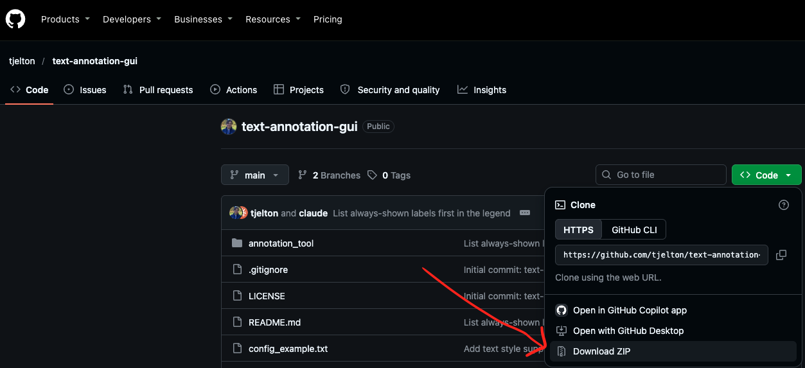
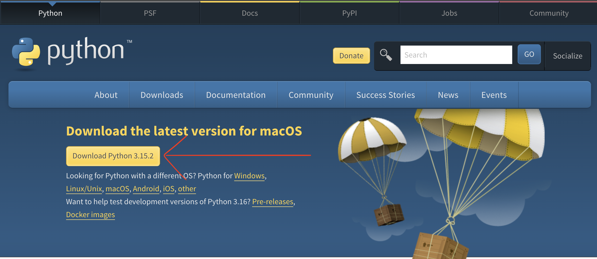
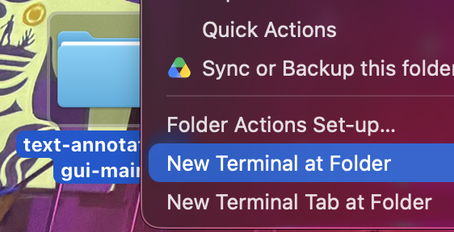
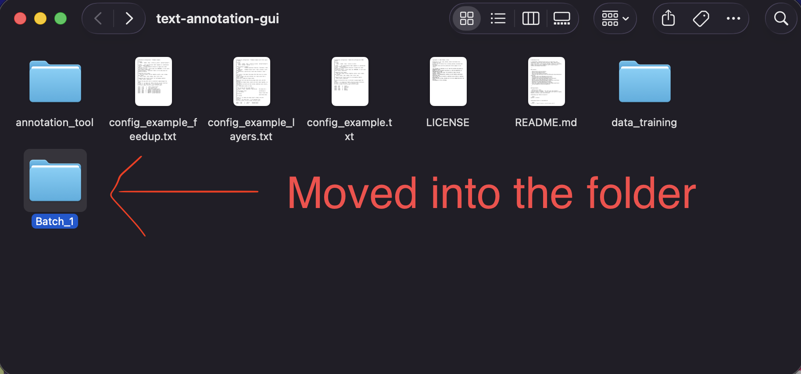
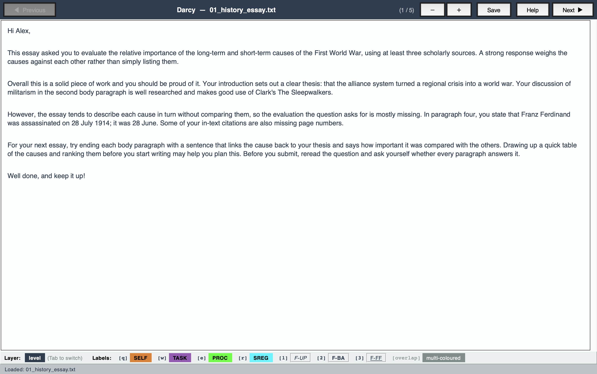
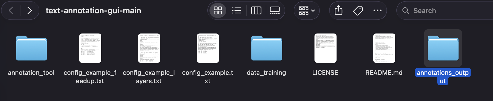

Annotation tool
Real Annotations
Please do not read this page until you are ready
This page explains how to set up and use the annotation tool for the annotations themselves. While you’re still working through the training (the guidelines and quizzes), there’s no need to look at it. I’ll let you know when it’s time to come back here.
In preparation for the AI annotations, I have made a custom annotation tool for us to use. It is available on GitHub. Below, I’ll explain the installation of the interface, as well as how to use it.
The aim is to get you familiar with the annotation tool, so that you can then go off and do the trial annotations.
Section 1: Installing the required software
- Visit https://github.com/tjelton/text-annotation-gui.
- Once on the website, click the green Code button, then click Download ZIP.

- Open a new terminal on your computer (Mac users: open Spotlight search and enter “Terminal”). Type the following and press Enter (don’t type the quotation marks):
If an error message appears, you don’t have Python, and you need to install it:python3 --version- Go to https://www.python.org/downloads/.
- Click the Download button (it should detect which operating system you’re using). Then go to your Downloads folder, open the file you downloaded and follow the steps.

- Close the terminal and force quit it.
- Open a new terminal and enter
python3 --versionagain. If version information appears, Python is now installed! If not, shut down your computer and turn it back on, then open a new terminal and trypython3 --versiononce more. If it still doesn’t work, please reach out for help.
- Move the ZIP file you downloaded to wherever you want to keep the tool, then unzip it.
- Right-click the unzipped folder and select New Terminal at Folder.

- For Windows users, the process should be similar (on Windows 11 the option is called Open in Terminal). If you get stuck, please reach out.
With this, you are now ready to start some annotations!
Section 2: Making annotations
- When it comes to making annotations, you will be told what data to use. To get the data ready, drag the folder of data into the same folder as the annotation tool you downloaded from GitHub. The image below shows an example of this:

You’ll notice there is a folder inside called
data_training. This holds some sample AI-generated feedback comments, which we use here to show how the tool works. - Open a new terminal for the
text-annotation-gui-mainfolder. To do this, find the folder, right-click it and select New Terminal at Folder. - With the new terminal open, run the following:
python3 -m annotation_tool -f ./data_training -c ./config_example_layers.txt -o ./annotations_output -a Darcy- Replace the name highlighted in light blue (Darcy) with your own name.
- This command uses the training data in
./data_training. For the real annotations, replacedata_trainingwith the name of the data folder you moved in. In the example above that folder is calledBatch_1, so you would write-f ./Batch_1. - If the terminal says
No module named '_tkinter', you need to install tkinter, which the tool uses to open its window. If you are unsure how to do this, please reach out to me.
- With the interface open, it should look something like this:

- Please watch this short video on how to use the tool:
If the video doesn’t play here, open it in Google Drive.
- If this were the real annotations, once you are finished you would send me the folder your annotations are saved in. In the command you used to launch the tool, you wrote
./annotations_output, so the annotations are saved in theannotations_outputfolder, as in the image below: